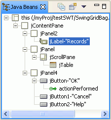

This Java Beans view shows a tree view of the components, events, and listeners used by the Java class.
The Java Beans view of the visual editor for Java shows a tree view of
all the components that are used in the class that you are composing. The
Java Beans view is automatically opened each time the visual editor is launched,
unless you have changed the preferences.

The selection between the entries in the Java Beans view and the Design view is synchronized both ways. If you select an item or items in the Design view, they are also selected in the Java Beans view. In the Java Beans view, the icon shown for the entry is the same icon used in the palette to represent the component type.
The label for each component in the Java Beans view is the name of the instance variable that is used in the Java code for the component. For some types of components, the label also contains details from the instance itself, for example the text of a button or label.
In addition to using the Java Beans view to see the structure of the existing components, you can use the Java Beans view to manipulate your class. By right-clicking on a component in the Java Beans view, you can access a pop-up menu with available actions. You can also drag components to reorder and nest them.
Parent topic: About the visual editor for Java